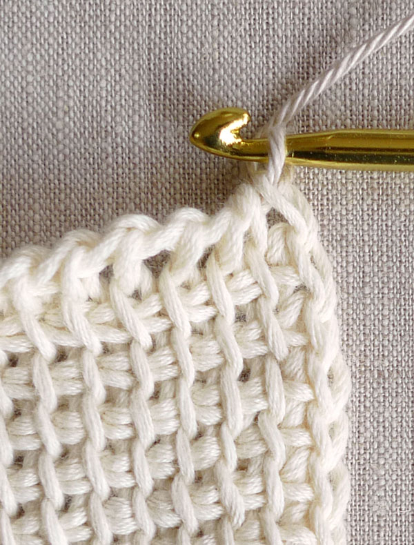
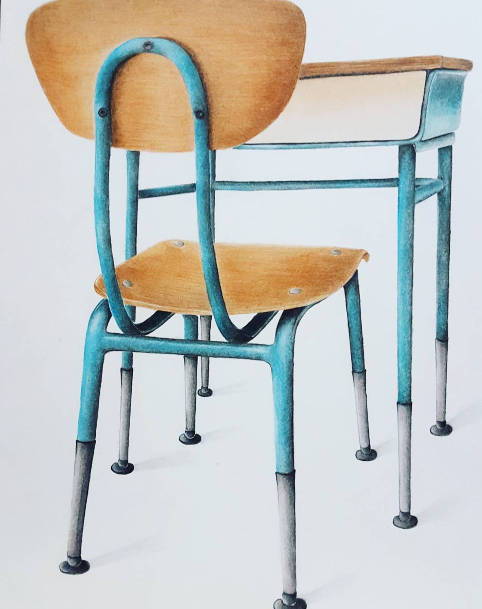

Crochet
I learnt how to crochet when I was in 8th grade. I started out making simple hats and scarves. I gradually started making blankets and sweaters. I joined a club 'All By Hand' when I was in High School where we made clothes to be donated to the less fortunate. For Christmas we made baby blankets and gave those to shelters.

Art
I always enjoyed art class from a young age. Over time with more practice I noticed I was able to draw 'still life.' This is a piece I did my final year of high school. The desk and chair was from my homeroom.

Basketball
I started playing sport such as soccer and basketball since I was in was old enough to join. I played basketball all throughout middle school and high school.